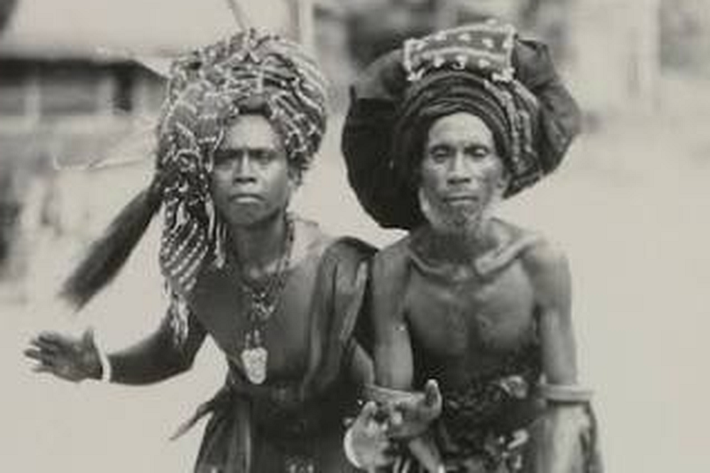

Inicio > Blog Bitácora de un bibliotecario > La forma de la memoria (05)
La forma de la memoria (05)
El tratado que no tenía documento
Las alianzas pela y la autoridad de los acuerdos vivos
Este post forma parte de una serie que explora las múltiples formas en que las sociedades humanas han almacenado, transmitido y transformado la memoria a lo largo del tiempo, más allá de las historias restringidas centradas en los libros y la escritura. La serie aborda los archivos, los documentos y los sistemas de memoria como tecnologías históricamente situadas, moldeadas por relaciones de poder, condiciones materiales, ecologías y cosmovisiones culturales, y examina formas de transmisión frecuentemente excluidas de las narrativas dominantes sobre alfabetización y preservación: tradiciones orales, patrones tejidos, estructuras musicales, performances rituales, paisajes, cuerpos y otras infraestructuras vivas de la memoria.. Todas las entradas de esta serie pueden consultarse en el índice de esta sección.
Más allá del tratado escrito
Los tratados suelen concebirse como documentos escritos. Contienen fechas, firmas, sellos, cláusulas y los nombres de las autoridades facultadas para negociarlos. Su fuerza documental parece depender de la inscripción: el acuerdo se vuelve vinculante porque se ha plasmado en un formato que puede almacenarse, copiarse, consultarse y presentarse como prueba. Incluso cuando la relación política cambia posteriormente, el documento permanece como registro de lo prometido.
Las alianzas interaldeanas conocidas como pela se desarrollaron en las Molucas centrales, un grupo de islas en el este de Indonesia. Conectaban aldeas autónomas de diferentes islas y, en muchos casos, trascendían las fronteras religiosas. Establecían obligaciones de asistencia, hospitalidad, cooperación y no matrimonio. Su autoridad se extendía más allá de quienes se unieron inicialmente a la alianza y se transmitía a las generaciones posteriores. Sin embargo, la relación no dependía de un documento fundacional conservado en un archivo.
Decir que un pela es un tratado resulta útil, pero solo provisionalmente. Ayuda a comprender la seriedad política de la institución, ya que no se trataba de amistades informales ni de intercambios ocasionales. Aldeas enteras establecieron relaciones que impusieron derechos y responsabilidades duraderos. Al mismo tiempo, el término "tratado" corre el riesgo de introducir suposiciones que no se ajustan al caso de las Molucas. Un pela no era un mero acuerdo expresado oralmente en lugar de por escrito. Creó una forma de hermandad colectiva, unió comunidades mediante juramento y sanción ancestral, y reorganizó las relaciones entre personas que, de otro modo, podrían haber permanecido políticamente separadas o incluso en abierto conflicto.
Su continuidad dependía del reconocimiento social más que de la vigencia de un documento. La alianza perduraba porque las aldeas siguieron recordando su origen, reconociendo sus prohibiciones, cumpliendo sus obligaciones y considerando la relación como vinculante.
La aldea como comunidad política
El mundo de las Molucas centrales, descrito por autores como Frank L. Cooley y Dieter Bartels, incluye las islas de Ambon, Haruku, Saparua y Nusalaut, junto con partes del oeste de Seram. Aunque estas islas conformaban una región cultural amplia, la vida política y social se organizaba en torno a la aldea, o negeri. Cooley describe la aldea como una institución históricamente estratificada, moldeada por formas de autoridad indígenas, influencias islámica y cristiana, la administración colonial holandesa y, posteriormente, el gobierno indonesio.
Una negeri no era un simple asentamiento. Era una comunidad corporativa compuesta por grupos de parentesco, cargos, derecho consuetudinario, relaciones territoriales y formas de autoridad ritual. Su organización interna incluía casas patrilineales o mata rumah, agrupadas en divisiones mayores conocidas como soa. El liderazgo de la aldea abarcaba cargos como el raja o gobernante, los jefes de soa, el tuan tanah (asociado a la tierra y la precedencia), funcionarios militares y religiosos, y el saniri negeri el consejo de la aldea. Algunos de estos cargos permanecieron activos, mientras que otros sobrevivieron solo parcialmente o en la memoria colectiva.
El análisis de Cooley es importante porque impide que el pela sea tratado como una costumbre aislada. La alianza conectaba comunidades que ya poseían sus propios sistemas de gobierno, parentesco, tenencia de la tierra, afiliación religiosa y autoridad consuetudinaria. Por lo tanto, una relación de pela no era un vínculo privado entre dos líderes, sino que unía colectividades políticas.
La relativa autonomía de las aldeas hacía que estas alianzas fueran especialmente significativas. Bartels señala que las relaciones entre aldeas podían verse limitadas por la distancia, la precariedad del transporte, las disputas territoriales y la lealtad al lugar de origen. Las aldeas solían ser económicamente autosuficientes y podían mantener relaciones tensas incluso con comunidades vecinas. En estas condiciones, el pela se convirtió en uno de los principales mecanismos para establecer obligaciones más allá de la aldea.
La alianza no disolvía la autonomía de la aldea, sino que creaba una relación que la trascendía. Las comunidades conservaban su identidad propia, al tiempo que asumían responsabilidades mutuas de maneras definidas.
Las formas del pela
Bartels distingue tres grandes formas de alianza. La primera es el pela keras, o "pela duro", generalmente asociado con acontecimientos importantes como la guerra, el derramamiento de sangre, un conflicto sin resolver o la ayuda extraordinaria ofrecida por una aldea a otra. La segunda es el pela gandong o bungso, basado en la afirmación de que los grupos de las aldeas aliadas comparten un origen o ascendencia común. La tercera, pela tempat sirih, es una alianza "flexible" que puede surgir de incidentes más limitados, actos de ayuda, reconciliación o comercio.
Estas categorías indican diferentes fundamentos históricos, pero no deben entenderse como clasificaciones fijas y rígidas. Bartels subraya que las formas más fuertes, en particular pela keras y pela gandong, funcionaban de manera similar. Ambas podían unir a aldeas enteras a través de una relación concebida como una hermandad duradera.
Las alianzas también evolucionaron con el tiempo. Bartels rastrea sus primeras formas hasta la guerra, la caza de cabezas, la defensa y la construcción de la paz. Algunos pactos prevenían nuevos ataques entre comunidades; otros permitían a las aldeas unir fuerzas contra enemigos comunes. Durante la expansión portuguesa y holandesa, las estructuras de alianza existentes podían reorientarse hacia la resistencia. También se establecieron nuevas alianzas durante los períodos de conflicto colonial, incluida la Guerra de Pattimura a principios del siglo XIX. Posteriormente, el pela podía facilitar el acceso a alimentos o recursos, especialmente cuando las aldeas más pobres de Ambon y Lease establecieron vínculos con las comunidades productoras de sagú en Seram.
Esta flexibilidad histórica es fundamental para la institución. El pela no sobrevivió porque conservara una única función original sin cambios. Siguió siendo relevante porque su estructura podía aplicarse a la guerra, la paz, el intercambio, la asistencia mutua, la construcción colectiva, la coexistencia religiosa y la identidad regional.
Un documento escrito suele buscar la continuidad mediante una redacción fija. El pela logró la continuidad a través de la durabilidad de la relación, incluso cuando las circunstancias en las que operaba dicha relación cambiaban.
Juramento, sangre y sanción ancestral
Las alianzas pela más sólidas se establecían mediante un juramento solemne. Bartels describe una ceremonia en la que se mezclaba sangre de los líderes de las comunidades participantes con vino de palma. Armas y otros objetos punzantes se sumergían en la mezcla, que luego se consumía. El intercambio de sangre establecía la hermandad, mientras que las armas simbolizaban la maldición asociada a la violación. Quien rompiera la alianza se arriesgaba al castigo de los ancestros que la habían fundado.
La ceremonia no solo representaba un acuerdo ya alcanzado, sino que también generaba una nueva condición social. Tras el juramento, los miembros de las aldeas aliadas se consideraban unidos por una misma sangre. La alianza era heredada por personas que no habían participado personalmente en su creación, ya que vinculaba a las aldeas como entidades colectivas.
Esto ayuda a explicar por qué el matrimonio entre miembros de comunidades aliadas estaba prohibido. Tal unión se consideraba incestuosa, incluso cuando los individuos involucrados no tenían una relación genealógica rastreable. El juramento había creado una relación de parentesco a nivel de aldea. La hermandad simbólica generó consecuencias prácticas para el matrimonio, la hospitalidad, la movilidad y el intercambio.
La alianza también impuso obligaciones de asistencia. Se esperaba que las aldeas asociadas se apoyaran mutuamente durante guerras, desastres naturales u otras situaciones críticas. Podían ser llamadas a proporcionar mano de obra para grandes proyectos comunitarios, incluyendo la construcción de iglesias, mezquitas y escuelas. A los visitantes de una aldea asociada no se les podía negar comida, y poseían derechos especiales de acceso a los productos agrícolas. En circunstancias en las que los recursos de huertos y bosques estaban protegidos por prohibiciones consuetudinarias, los tratados pela crearon reconocidas excepciones.
Estas obligaciones no se conservaron como cláusulas en un texto. Estaban arraigadas en el conocimiento colectivo y reforzadas por la sanción ancestral. Su autoridad se basaba en parte en el temor a la enfermedad, la desgracia o la muerte tras la transgresión. Pero esto no debe reducirse a una "superstición" añadida a un acuerdo político. La dimensión ancestral formaba parte del sistema de aplicación de la institución. La autoridad social y la cosmológica operaban conjuntamente.
Un tratado moderno separa la obligación legal del peligro ritual de forma más tajante. En el pela, el juramento, los ancestros, la aldea y la relación pertenecían al mismo ámbito de autoridad.
Un acuerdo distribuido en la práctica
Sin un documento formal, la alianza debía transmitirse por otros medios. Su continuidad dependía de las narrativas de origen, la memoria colectiva, las instituciones de la aldea, el conocimiento ritual y la conducta repetida. Era necesario saber qué comunidades eran socias, por qué existía la alianza, qué obligaciones se derivaban de ella y qué acciones constituirían una violación.
Este conocimiento no se concentraba en un solo objeto. Se distribuía entre personas y prácticas. Los líderes de la aldea podían conservar relatos del origen de la alianza. Las familias transmitían la prohibición del matrimonio. La hospitalidad ejemplificaba el reconocimiento mutuo. El trabajo cooperativo demostraba que el vínculo seguía vigente. Las narrativas ancestrales explicaban por qué la relación conllevaba una autoridad que trascendía la conveniencia presente.
Por lo tanto, la alianza no era ni puramente oral ni puramente performativa. Estos términos identifican componentes importantes, pero ninguno abarca la estructura completa. El pela dependía del habla, la memoria, la acción corporal, las instituciones consuetudinarias, los intercambios materiales y las expectativas sociales. Su fuerza documental surgía de la combinación de todos estos elementos.
Este carácter distribuido también significaba que la alianza podía debilitarse sin que se destruyera ningún documento. Un tratado escrito podría haber permanecido físicamente intacto incluso cuando se lo ignorara políticamente. En el caso de las Molucas, el peligro era diferente. Si las narrativas de origen dejaban de transmitirse, si las aldeas asociadas dejaban de ayudarse mutuamente, si las prohibiciones perdían su fuerza o si las comunidades dejaban de reconocer la relación, la alianza podía convertirse en un mero vestigio documental sin dejar tras de sí una carta fundacional.
La continuidad requería más que recuerdo. Requería acción.
La distinción se aprecia en el análisis de Bartels sobre la diáspora molucana en los Países Bajos. La lealtad a la aldea y la identidad pela podían persistir lejos de las islas, pero la alianza operaba ahora en condiciones sociales diferentes. Ya no dependía de los mismos patrones de tierra, subsistencia, viajes o gobierno aldeano. Su supervivencia implicaba reinterpretación y continuidad selectiva.
Tales transformaciones revelan la flexibilidad de un sistema cuya autoridad nunca se limitó a una redacción original. Dado que un pela se basaba en relaciones, podía viajar con las personas que las sustentaban. Al mismo tiempo, el alejamiento del mundo aldeano modificó las capacidades de la alianza.
Escribir en torno al tratado
La ausencia de una carta fundacional no significa que un pela existiera al margen de la escritura. Los oficiales coloniales, misioneros, administradores y antropólogos produjeron extensas descripciones escritas de la sociedad de las Molucas centrales. La obra de Cooley reconstruye el gobierno de las aldeas mediante investigación de campo, materiales históricos y registros antiguos. Bartels recurre a la etnografía y a informes europeos para rastrear las funciones cambiantes de las alianzas.
Estos textos son indispensables para el estudio histórico, pero ocupan una posición secundaria con respecto a la institución que describen. Registran los pela desde fuera o a posteriori. Permiten identificar categorías, reconstruir rituales, comparar aldeas y preservar detalles que posteriormente podrían ser difíciles de recuperar. No sirven como fuente de la que las comunidades asociadas derivan sus obligaciones.
Esta diferencia es importante para la historia documental. La evidencia escrita puede rodear una institución social sin constituirla. El archivo puede preservar relatos de autoridad sin dejar de ser externo al proceso mediante el cual se reconoce dicha autoridad.
La escritura colonial también introdujo sus propias transformaciones. Cooley demuestra que el gobierno aldeano se fue estratificando mediante sucesivas intervenciones externas. Los cargos indígenas se mantuvieron, modificaron, renombraron, combinaron con la representación electa o perdieron sus funciones originales. Las estructuras administrativas neerlandesas e indonesias no solo reemplazaron las instituciones locales, sino que reorganizaron el ámbito en el que operaban.
Un proceso similar afectó la representación de los pela. Una vez descrita en términos administrativos o etnográficos, la alianza podía clasificarse como tratado, institución de parentesco, mecanismo de paz, sistema de intercambio o vestigio del derecho consuetudinario. Cada etiqueta hacía legibles algunas características, a la vez que minimizaba otras.
La escritura preservó el conocimiento sobre la alianza, pero también la tradujo a categorías diseñadas para diferentes mundos institucionales.
Los límites de la analogía
El título "El tratado que no tenía documento" capta parte del problema documental, pero el pela fue más que un acuerdo sin papel.
Un tratado suele establecer relaciones entre entidades políticas, pero mantiene a sus poblaciones socialmente diferenciadas. Los pela alteraron la relación entre las propias poblaciones. Estas alianzas crearon obligaciones de hermandad, prohibieron el matrimonio, otorgaron derechos de hospitalidad y acceso a recursos, y sometieron a las poblaciones a la protección ancestral. El acuerdo político y la clasificación del parentesco se volvieron inseparables.
Además, la alianza carecía de una formulación única y recuperable. No existía un texto definitivo con el que contrastar la práctica posterior. Su contenido debía permanecer reconocible a través de las generaciones sin estabilizarse en una redacción exacta. Esto abrió la puerta a la variación, la reinterpretación y los cambios de énfasis, pero no la convirtió en una institución arbitraria. La memoria social, la autoridad de la aldea, la sanción ritual y las expectativas recíprocas limitaban lo que podía considerarse una conducta legítima.
Por lo tanto, la ausencia de un documento no implicó la ausencia de forma. El acuerdo poseía estructura, categorías, obligaciones, procedimientos y consecuencias. Lo que le faltaba era un escrito autónomo.
Esta distinción complejiza las explicaciones habituales del desarrollo institucional. La escritura se presenta a menudo como el mecanismo que permite que las obligaciones se vuelvan duraderas, impersonales y transmisibles. Los pela demuestran que las obligaciones duraderas también pueden organizarse mediante identidades colectivas, fundamentos rituales y reconocimiento social recurrente.
El sistema no era menos exacto por no ser textual. Su precisión radicaba en otro lugar.
Autoridad documental más allá del escrito
La historia del libro y del documento a menudo ha privilegiado los objetos que preservan la información a través de la persistencia material. Cartas, tratados, leyes, registros y contratos resultan especialmente importantes porque convierten las decisiones sociales en documentos perdurables. Crean una superficie a la que las instituciones pueden recurrir cuando la memoria se vuelve incierta o los intereses divergen.
Las alianzas pela muestran otra forma en que la autoridad puede perdurar. Sus obligaciones no se preservaron separándolas de la vida social y fijándolas en un texto estable, sino integrándolas en la relación continua entre las comunidades.
Esta forma de continuidad documental no era automática ni permanente. Requería transmisión, reconocimiento y repetición. La alianza podía sobrevivir al cambio histórico porque era capaz de asumir nuevas funciones, pero esa misma dependencia de la práctica viva la hacía vulnerable a la ruptura social. Una carta preservada puede sobrevivir a la comunidad que la produjo. Una alianza pela no puede mantenerse plenamente activa sin comunidades dispuestas y capaces de sostenerla.
La distinción no debe convertirse en un contraste entre escritura muerta y memoria viva. Los registros escritos pueden permanecer activos, ser objeto de debate y tener poder social; las alianzas consuetudinarias pueden debilitarse, ceremoniarse o desvincularse de sus funciones originales. El valor del caso de las Molucas reside en demostrar que la autoridad documental puede organizarse mediante más de una estructura material y social.
Un documento vincula a un acuerdo con un objeto. El pela lo situaba en una relación entre aldeas, ancestros, obligaciones, narrativas y actos repetidos de reconocimiento. Su continuidad dependía menos de la supervivencia del original que de la capacidad de las generaciones posteriores para retomar el tratado.
Bibliografía
- Bartels, Dieter (1980). "Alliances Without Marriage: Exogamy, Economic Exchange, and Symbolic Unity among Ambonese Christians and Moslems." Anthropology, 3 (1-2).
- Bartels, Dieter (n.d.). "Pela Alliances in the Central Moluccas and in the Netherlands: A Brief Guide for Beginners." Leiden University.
- Cooley, Frank L. (1966). "Altar and Throne in Central Moluccan Societies." Indonesia, 2 (October), pp. 135-156.
- Cooley, Frank L. (1969). "Village Government in the Central Moluccas." Indonesia, 7 (April), pp. 138-163.